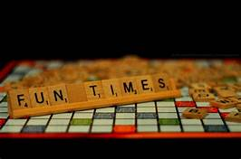
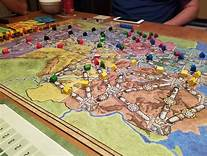

Boardgames have been an entertainer across generations for centuries. So if you are getting bored head out and play some boardgames with your favorite group or with strangers and make new friends! They are usually categorised on the top level as Party Games and Strategy Games.
Party Games
These are mostly lighters games that may not take long playtimes but can also be played by a higher number of players
- Cards against humanity
- Wits and Wagers
- Twister
- Sushi Go
- Scrabble ...... goes on
Strategy Games
This category is usually for the seriuos gamers , I say so as it can really get serious! But truely Startegy games can take longer to play and involve a more involved planning or startegy in place as the gameplay progresses.
- Terraforming Mars
- Terra Mystica
- Power Grid
- Game of Thrones
- War of the rings....... and many more